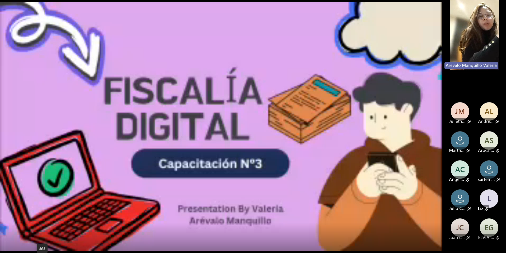
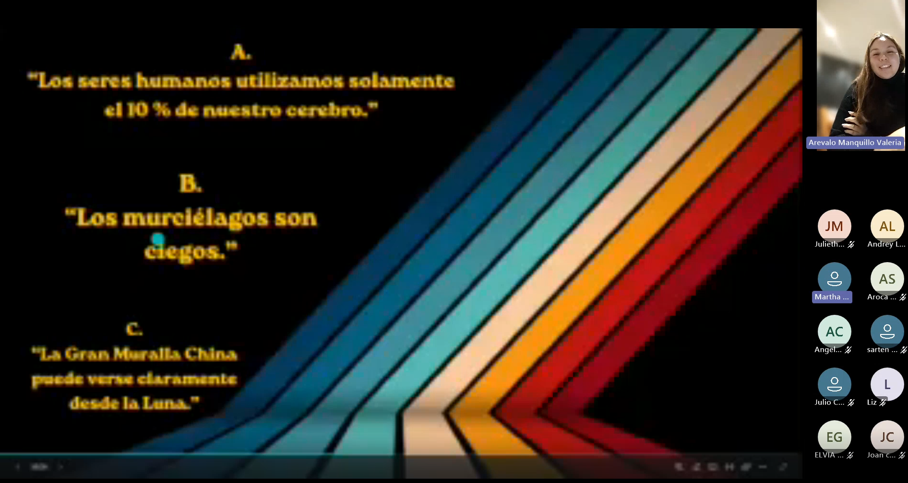
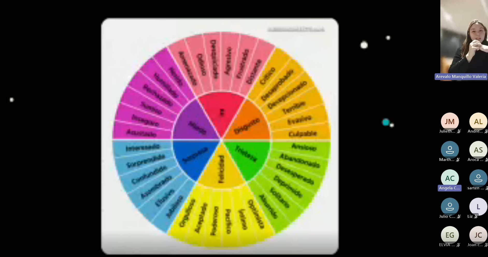
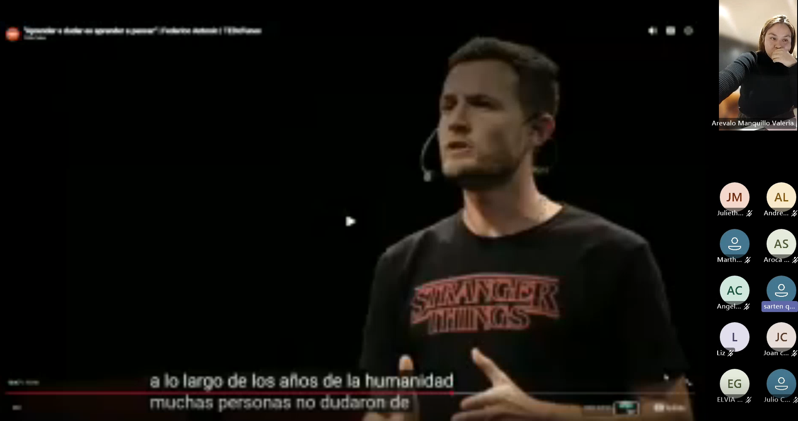
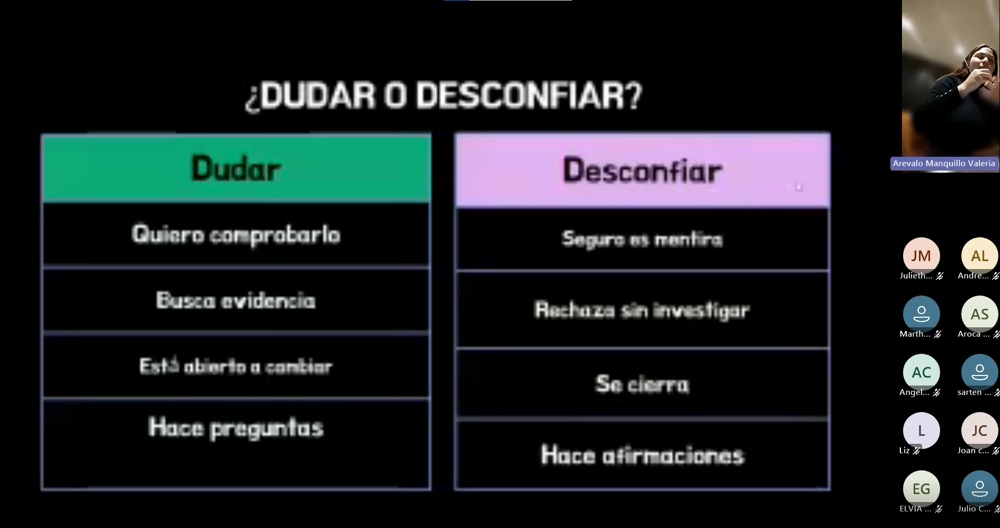
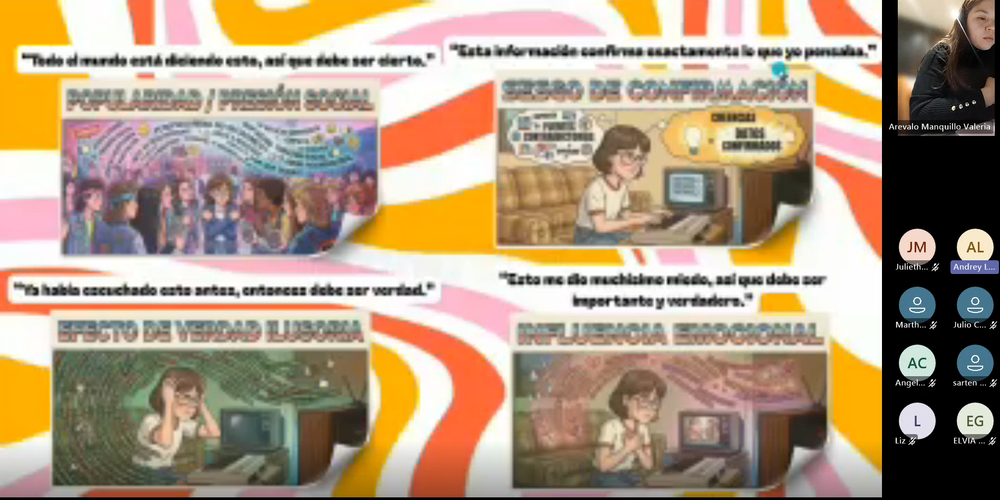

Contexto de la reunión
La tercera reunión del proyecto Fiscalía Digital representó una transición desde los aspectos técnicos de la verificación digital hacia el análisis de los procesos mentales que influyen en la forma en que las personas interpretan la información. La sesión abordó conceptos como familiaridad, sesgos cognitivos, emociones, recuerdos, experiencias previas y pensamiento crítico, permitiendo comprender que la desinformación no solo depende de la tecnología, sino también de la manera en que nuestro cerebro procesa los mensajes que recibe.
La reunión se desarrolló mediante Microsoft Teams y fue documentada a través de la grabación oficial y de la transcripción correspondiente. Los momentos seleccionados evidencian participación activa, argumentación, reflexión y transferencia de los conceptos a situaciones reales de la vida cotidiana y del ámbito educativo.
Ficha técnica
- Reunión: 3
- Tema principal: Pensamiento crítico y sesgos cognitivos
- Modalidad: Virtual sincrónica
- Plataforma: Microsoft Teams
- Facilitadora: Valeria Arévalo Manquillo
- Duración aproximada: 1 hora y 35 minutos
Objetivos desarrollados
Pensamiento crítico
Comprender cómo analizar información de manera reflexiva y cuestionar las interpretaciones automáticas.
Sesgos cognitivos
Identificar cómo la familiaridad, las emociones y las experiencias personales influyen en la percepción de la realidad.
Argumentación y reflexión
Fortalecer la capacidad de debatir, justificar ideas y reconocer diferentes puntos de vista frente a una misma situación.
Evidencias de la reunión
A continuación se presentan los momentos con mayor participación identificados durante la Reunión 3. Cada evidencia documenta procesos de recuperación del aprendizaje, reflexión, argumentación y aplicación de conceptos relacionados con pensamiento crítico y sesgos cognitivos.
Evidencia 1 · Recuperación de aprendizajes de la Reunión 2
Minuto de referencia
08:58 – 10:00

Al inicio de la reunión, la facilitadora invitó a los participantes a recordar los principales aprendizajes obtenidos durante la sesión anterior. Este ejercicio permitió verificar la continuidad del proceso formativo y evidenciar qué conceptos habían sido apropiados por el grupo.
Alison Arevalo reconstruyó de manera espontánea varios contenidos relacionados con las partes de un enlace, HTTP y HTTPS, verificación de páginas web y suplantación de identidad. Su intervención demostró que los conocimientos adquiridos en la Reunión 2 permanecían presentes y podían recuperarse sin necesidad de consultar material de apoyo.
La facilitadora utilizó esta participación para reforzar la relación entre los temas previamente estudiados y el nuevo contenido de la sesión, mostrando que el pensamiento crítico también depende de recordar y conectar aprendizajes anteriores.
Evidencia 2 · Actividad sobre familiaridad y verdad
Minuto de referencia
25:00 – 29:50

En este momento de la reunión se desarrolló una dinámica en la que los participantes debían decidir si diferentes afirmaciones eran verdaderas o falsas. La actividad permitió observar cómo las personas suelen confiar en información que les resulta conocida o repetida con frecuencia.
Andrey, Angela, Liz y Martha participaron activamente respondiendo las afirmaciones propuestas y justificando sus decisiones. Posteriormente, la facilitadora explicó que la familiaridad con una información no constituye evidencia de que sea verdadera, ya que el cerebro puede interpretar como confiable aquello que ha visto repetidamente, incluso cuando carece de fundamento.
La actividad permitió cuestionar una reacción automática muy común en los entornos digitales y preparó el terreno para el estudio de los sesgos cognitivos que influyen en la forma en que interpretamos la información.
Evidencia 3 · Cómo las emociones, los recuerdos y las experiencias influyen en la información
Minuto de referencia
29:00 en adelante

Después de la actividad sobre familiaridad y verdad, la facilitadora abrió un espacio de reflexión para analizar por qué las personas no reciben la información de manera completamente objetiva. A partir de ejemplos cotidianos, se explicó que las noticias, imágenes y mensajes digitales son interpretados a través de emociones, recuerdos, experiencias personales y creencias previas.
Los participantes compartieron situaciones en las que una misma información podía generar reacciones diferentes según el contexto personal de quien la recibe. La conversación permitió comprender que dos personas pueden observar el mismo contenido y llegar a conclusiones distintas debido a sus experiencias anteriores.
La facilitadora relacionó esta idea con la circulación de información en redes sociales, explicando que muchas campañas de desinformación apelan precisamente a emociones intensas como el miedo, la indignación o la sorpresa para aumentar la probabilidad de que un mensaje sea compartido sin ser verificado.
Evidencia 4 · Debate sobre sesgos, expectativas y la manera de interpretar la realidad
Minuto de referencia
1:15:00 – 1:17:40

Este fue uno de los momentos más significativos de toda la reunión. Después de observar un video relacionado con pensamiento crítico, los participantes iniciaron un debate sobre la forma en que los sesgos, las expectativas y las emociones influyen en la interpretación de una misma situación.
Un participante explicó que las personas pueden interpretar un mismo hecho de maneras diferentes dependiendo de sus experiencias previas y de las expectativas con las que llegan a una situación determinada. Posteriormente, Liz profundizó la reflexión indicando que los seres humanos realizan inferencias inconscientes y construyen presupuestos a partir de información limitada.
Finalmente, Angela explicó que la información puede ser presentada de una forma específica para provocar determinadas reacciones emocionales, y que reconocer esa vulnerabilidad es fundamental para desarrollar pensamiento crítico y evitar ser manipulado por contenidos engañosos.
Evidencia 5 · Reflexión sobre la influencia de la tecnología y la pérdida del pensamiento crítico
Minuto de referencia
1:20:00 – 1:25:00

En esta parte de la reunión se desarrolló una conversación más profunda sobre el impacto de la tecnología, la velocidad de acceso a la información y la búsqueda constante de soluciones rápidas en la capacidad de las personas para cuestionar y analizar la realidad.
Los participantes reflexionaron sobre cómo el uso intensivo de herramientas digitales puede llevar a aceptar información sin examinarla cuidadosamente, especialmente cuando los contenidos son presentados de forma inmediata, resumida o emocionalmente atractiva.
La conversación también abordó el papel de la educación, la diferencia entre memorizar y comprender, y la necesidad de construir acuerdos incluso cuando existen puntos de vista diferentes. La facilitadora enfatizó que el pensamiento crítico no consiste únicamente en desconfiar de todo, sino en desarrollar la capacidad de formular preguntas, buscar evidencia y dialogar con respeto.
Evidencia 6 · Debate sobre el video de pensamiento crítico
Minuto de referencia
1:33:30 – 1:35:30

En el cierre de la reunión se desarrolló uno de los debates más sólidos del proceso formativo. Después de observar un video sobre pensamiento crítico, Andrey explicó que las personas reaccionan inicialmente desde sus propias perspectivas y que es necesario detenerse a reflexionar sobre por qué interpretan una situación de una determinada manera.
Posteriormente, Angela, desde su experiencia como docente, señaló la importancia de crear espacios donde los estudiantes puedan expresar desacuerdo, formular preguntas y argumentar sus posiciones. Su intervención destacó que el pensamiento crítico se fortalece cuando las personas tienen la oportunidad de cuestionar, dialogar y construir conocimiento de forma colaborativa.
La facilitadora retomó ambas intervenciones para concluir que el pensamiento crítico es una competencia esencial para la ciudadanía digital, ya que permite resistir la manipulación, analizar diferentes perspectivas y tomar decisiones basadas en evidencia.
Resultados observados durante la reunión
La tercera reunión permitió evidenciar un avance significativo en la capacidad de los participantes para analizar la información desde una perspectiva crítica y reflexiva. A lo largo de las actividades desarrolladas, el grupo demostró comprensión de conceptos relacionados con familiaridad, sesgos cognitivos, emociones, expectativas y pensamiento crítico, así como una creciente habilidad para argumentar, debatir y reconocer la influencia de factores psicológicos en la interpretación de la realidad.
Los momentos de mayor impacto pedagógico fueron el debate sobre sesgos y expectativas y la discusión final sobre pensamiento crítico, donde los participantes aplicaron los conceptos estudiados a experiencias personales, educativas y sociales, evidenciando una apropiación profunda del contenido.
Resultado principal
La reunión fortaleció las competencias relacionadas con pensamiento crítico, argumentación, análisis de sesgos cognitivos y reflexión sobre el impacto de las emociones y la tecnología en la interpretación de la información, consolidando la capacidad de los participantes para actuar como ciudadanos digitales más conscientes y analíticos.
Continúa explorando el repositorio
Has finalizado la documentación correspondiente a la Reunión 3. Puedes regresar al repositorio principal de sesiones o continuar con la Reunión 4, donde se desarrollan las actividades relacionadas con verificación avanzada de información, inteligencia artificial, ciudadanía digital y aplicación integrada de los conocimientos adquiridos durante todo el proceso formativo.